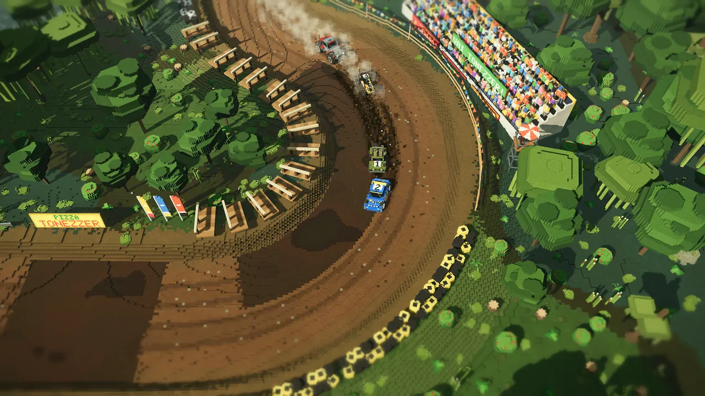
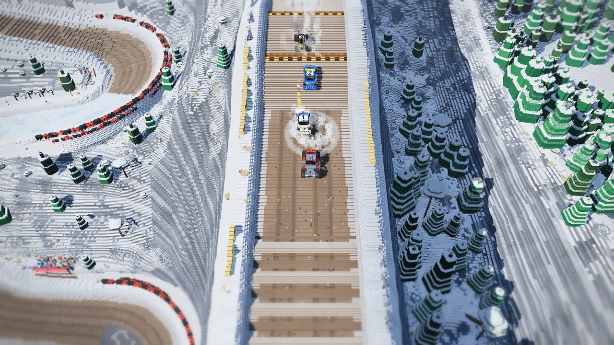
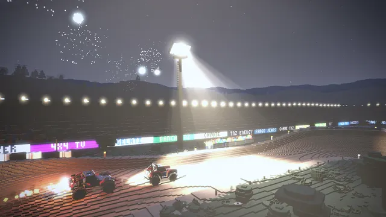
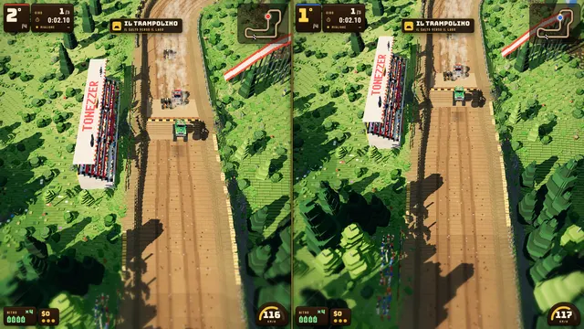
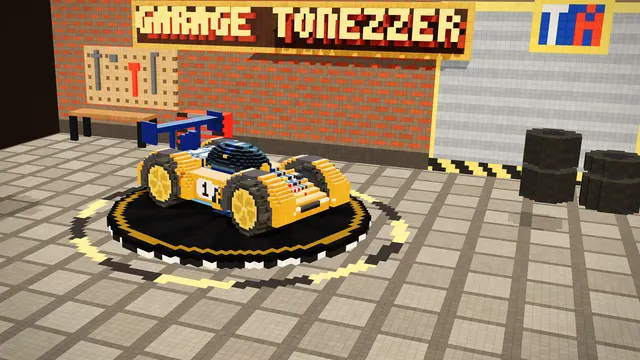
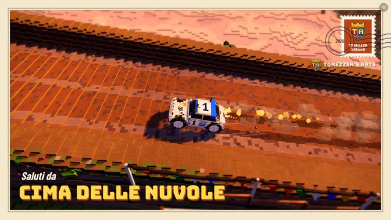

Il Passo del Ghiacciaio · il crepaccioLa Strada della Forra · la golaTonezzer Ring · stadio di notte

Palude Nera · fango

Passo della Neve · neve
Tonezzer’s Arts presenta
Fango, salti e nitro in voxel art HD. Sette mezzi da potenziare nel Garage Tonezzer, dodici circuiti, dieci cronoscalate contro il tuo fantasma e sfide a due sullo stesso schermo.
Nessuna installazione, nessuna registrazione. Consiglio della casa: F11 per lo schermo intero, e il volume alto.telefono in orizzontale, e il volume alto.
Cima delle Nuvole · al tramonto
Da sempre, i migliori giochi del mondoTonezzer RacersGioca gratis nel browserCoppa TonezzerDa sempre, i migliori giochi del mondoTonezzer RacersGioca gratis nel browserCoppa Tonezzer
Trailer · versione 2
È arrivato il Garage Tonezzer
Sette mezzi, quattro nuove cronoscalate epiche, il Tonezzer Stadium, 40 trofei e la modalità foto. Alza il volume.
Sette mezzi, una pista di fango e nessuna pietà. Tonezzer Racers è l’erede spirituale delle corse off-road da sala giochi di una volta, ricostruito voxel per voxel in alta definizione. La versione 2 porta il Garage Tonezzer, nuove piste, trofei e la modalità foto. Si gioca subito, nel browser, gratis.
* Secondo uno studio indipendente condotto da Giacomo Tonezzer.
Modalità
Cronoscalata
Dalla valle alla vetta contro il cronometro: dieci salite, tempi intermedi, il fantasma del tuo record da battere, sfide a premi e medaglie da Bronzo fino al Platino. Le nuove: Cima delle Nuvole sopra il mare di nuvole, la Strada della Forra, il Vulcano Tonezzer e il Passo del Ghiacciaio. Sbagli una curva? R e si riparte.

12 circuiti
Deserti, canyon al tramonto, paludi, boschi alpini, neve e stadi illuminati a giorno. Nuovi il Tonezzer Stadium, con i fuochi d’artificio all’ultimo giro, e il Rallycross del Lago.

2 giocatori
Schermo diviso sullo stesso computer: tastiera condivisa o due gamepad. Le amicizie più solide finiscono qui, al primo tornante.

7 mezzi e il Garage Tonezzer
Pick-up, Jeep d’Epoca, Buggy, Rally, Trophy Truck, Monster e la leggendaria Tonezzer Special. Motore, turbo, gomme, sospensioni, vernici, adesivi e clacson (sì, anche la paperella).
Gran Premio Tonezzer’s Arts
Dodici gare in fila contro il Barone, premi in denaro e un gettone in meno a chi arriva ultimo. Chi incassa di più alza la Coppa Tonezzer.

Trofei e modalità foto
40 Trofei Tonezzer da sbloccare, qualcuno segreto. Premi F in gara, muovi il drone e scatta la tua cartolina. Ammaccature e pezzi che volano? Paga Tonezzer.
Colonna sonora
“Toh-NAY-tser Racers”
La canzone ufficiale del gioco, scritta da Giacomo Tonezzer e creata con Suno. Si consiglia l’ascolto a finestrini abbassati.
I 12 circuiti
Mesa Grande Deserto
Tonezzer Ring Notte
Tonezzer Stadium Notte Nuovo
Palude Nera Palude
Bosco del Lupo Bosco alpino
Rallycross del Lago Bosco alpino Nuovo
Gola del Diavolo Canyon
Valle della Morte Deserto
Tre Archi Canyon
Rodeo di Mezzanotte Notte
Passo della Neve Neve
Canyon del Fuoco Canyon
Le 10 cronoscalate
Cima delle Nuvole Nuovo
La Strada della Forra Nuovo
Il Vulcano Tonezzer Nuovo
Il Passo del Ghiacciaio Nuovo
Colle del Falco
Passo dello Stambecco
Rampa del Condor
Strada del Vulcano
Salita al Passo della Neve
Salita della Gola del Diavolo
Galleria
Cartoline dal fango
Immagini catturate dal gioco vero, versione 2, senza ritocchi. Il fango è tutto originale.
Il catalogo
I giochi di Tonezzer’s Arts
Un catalogo piccolo ma perfetto: per ora contiene esclusivamente capolavori.
Disponibile · Gratis
Tonezzer Racers
Corse off-road · 1–2 giocatori · Browser
Il gioco di bandiera, ora alla versione 2: sette mezzi, il Garage Tonezzer, dodici circuiti, dieci cronoscalate, trofei e modalità foto. La Coppa Tonezzer non si vince da sola.
Il primo simulatore di aratura a 140 km/h. Stessa fisica del fango, ma con le zolle. La Federazione Agraria ha già chiesto di vietarlo.
Top secret
Prossimamente*
Tonezzer Spazio Profondo
Corse lunari · gravità ridotta
Il primo pick-up sulla Luna. Salti da quaranta secondi, crateri come paraboliche e nessun posto dove nascondersi dal Barone.
* “Prossimamente” è un’unità di misura temporale brevettata da Tonezzer’s Arts. Corrisponde a: quando Giacomo dice che è pronto.
Lo studio
Una casa di produzione celeberrima
Tonezzer’s Arts è la celeberrima casa di produzione di videogiochi fondata da Giacomo Tonezzer. Gli storici non concordano sulla data di fondazione; concordano però sul fatto che esista, semplicemente, da sempre.
Si narra che il giovane Giacomo abbia imparato a sterzare prima di camminare, a disegnare circuiti prima di scrivere e a vincere la Coppa Tonezzer prima ancora di inventarla. Il suo primo pick-up era un carrello della spesa. Ha vinto lo stesso.
Da allora la missione dello studio non è mai cambiata: fare i migliori giochi del mondo, uno alla volta, senza fretta e senza la minima modestia. Ogni progetto nasce da un’idea di Giacomo, cresce sotto la sua direzione artistica, viene collaudato personalmente (con il record su ogni pista, ovviamente) e arriva a voi gratis, perché la grandezza va condivisa.
«Un gioco è finito quando il fango schizza nel modo giusto.»
Riconoscimenti
Chi c’è dietro il fango
Giacomo Tonezzer
Ideazione, direzione e produzione
Ideazione e direzione, direzione artistica, produzione esecutiva, collaudo piloti, collaudatore capo dei salti e detentore del record su ogni pista.
Claude (Anthropic)
Sviluppo e programmazione
Sviluppo, programmazione, fisica dei pick-up, motori e cori sintetizzati e ogni singolo voxel: Claude, l’assistente AI di Anthropic, sotto la direzione di Giacomo Tonezzer.
Colonna sonora
“Toh-NAY-tser Racers”
Canzone di Giacomo Tonezzer, creata con Suno. Approvazione del rombo dei motori: Giacomo Tonezzer.
Grazie a
Strumenti e ispirazione
three.js (motore 3D, licenza MIT), i caratteri Bungee e Barlow Condensed, il Fan Club Ufficiale Tonezzer, le sale giochi di una volta e il fango del sabato sera.
Come si gioca
Comandi e requisiti
Tastiera · Giocatore 1
↑accelera
↓freno / retromarcia
←→sterza
Spazionitro
Rriposiziona
Da solo guidi anche con WASD. P pausa, C telecamera, V zoom, F modalità foto, H clacson, M audio.
Tastiera · Giocatore 2
Waccelera
Sfreno / retromarcia
ADsterza
Qnitro
Eriposiziona
Gamepad
Levettasterza
ARTaccelera
XLTfreno
BRBnitro
Yriposiziona
Con due gamepad, uno per giocatore.
Touch
Pad sinistrosterza
Pedali destrigas e freno
Tasti a schermonitro, riposiziona, pausa
Su telefono e tablet si gioca in orizzontale.
Requisiti
Un browser moderno con WebGL: Chrome, Edge, Firefox o Safari aggiornati.
Meglio su computer, con tastiera o gamepad. Gira anche su tablet e telefoni recenti.
Connessione internet all’avvio: il motore 3D e i caratteri arrivano dalla rete.
Niente da installare: record e progressi restano salvati nel tuo browser.
Pronto a sporcarti le ruote?
Il Barone ti aspetta sulla linea di partenza. La Coppa Tonezzer pure.